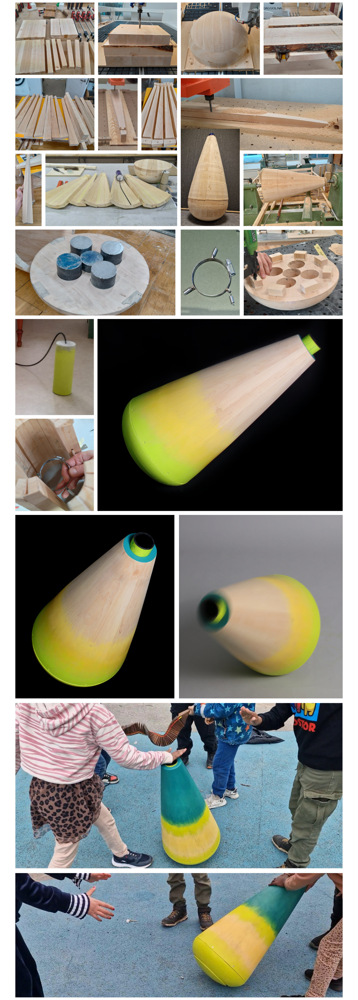
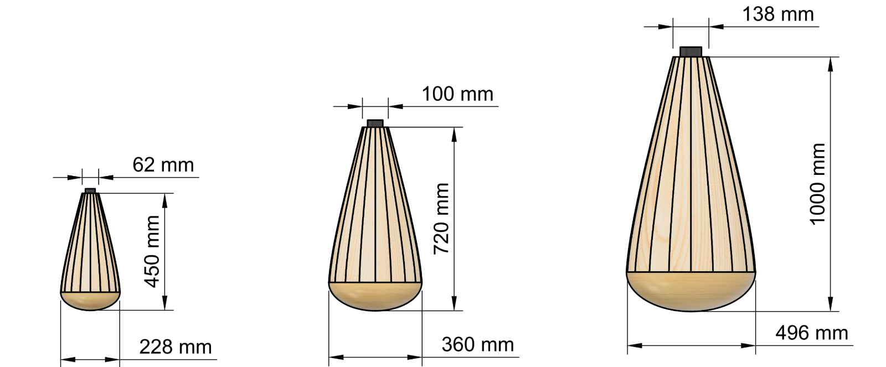
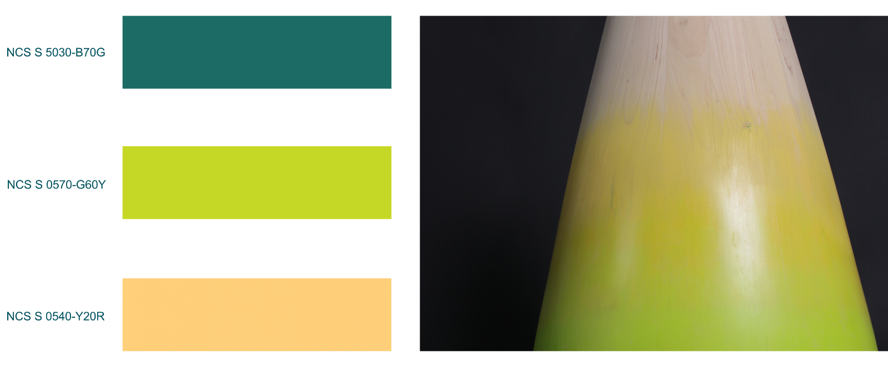
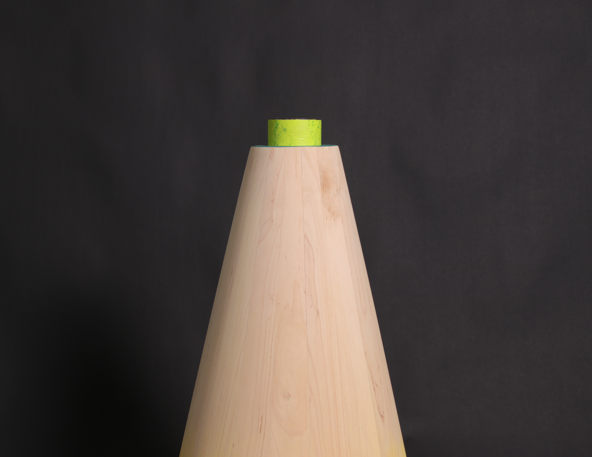

Angry Bunch
2024The Angry Bunch features a thunder tube - a percussion instrument that produces diverse sounds based on interaction. Striking the top of the tube creates distinct sounds, while shouting into it produces an echoing effect. The prototype wobbles during interaction as it makes thunderous sounds, heightening the dynamic experience, while its design ensures stability and responsiveness, enhancing both sound quality and movement. Overall, this project promotes open-ended, creative interactions with the instrument and peers alike.

I combined virtual reality technology with architectural visualization to prototype full‑scale, three‑dimensional designs in real time, immersing myself in environments scaled from toddlers through adults, manipulating spatial configurations on the fly and iterating instantly to validate functional and aesthetic suitability. 
The Angry Bunch incorporates instruments specifically designed for children's needs, with smaller instruments producing softer sounds and movements ideal for toddlers. Larger instruments offer more resonant sounds suitable for older children, providing a stimulating challenge. This variety fosters greater sound collaboration and creates a diverse acoustic environment. The different sound levels and movement speeds and scales enhance play, sound production, and collaboration among children by allowing them to choose their preferred difficulty and auditory experience, enriching their overall interaction.   
The prototype facilitated moments of accomplishment and creative play, including using it as a musical instrument and initiating rhythmic play and dance. Children's curiosity about its mechanisms showed their interest in understanding its workings. The interplay of noise and synchronization in their interactions enhanced engagement and cooperative behaviors, promoting empathy and social skills. This playful approach encourages creative uses of the instruments, fostering conflict resolution, problem-solving, and cooperative interactions among children. Overall, these findings highlight the prototype's potential to not only stimulate curiosity and creative play but also to cultivate essential social and cognitive skills in children.
In summary, the Angry Bunch project is a deliberate effort to harness the power of play and sound to promote cooperation, enhance social bonds, and contribute to the holistic development of children. Inspired by children's curiosity and heroic play. The prototype serves as a versatile companion for children's play by transforming their play behaviors into interactive, dynamic experiences that produce captivating sounds and movements. It's an attempt to find balance between aesthetics, functionality, and the promotion of bodily cooperative, imaginative rough-and-tumble play with the help of order and randomness. By providing opportunities for collaborative play, this project seeks to cultivate a more inclusive and resilient society, where the joy of creating music together can lead to lasting positive impacts.